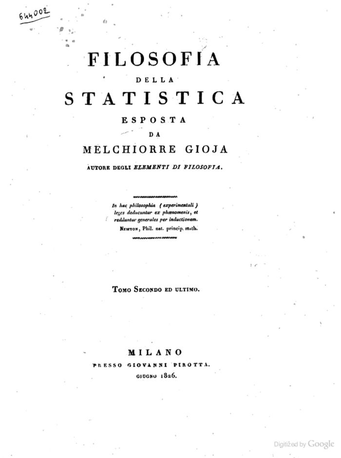
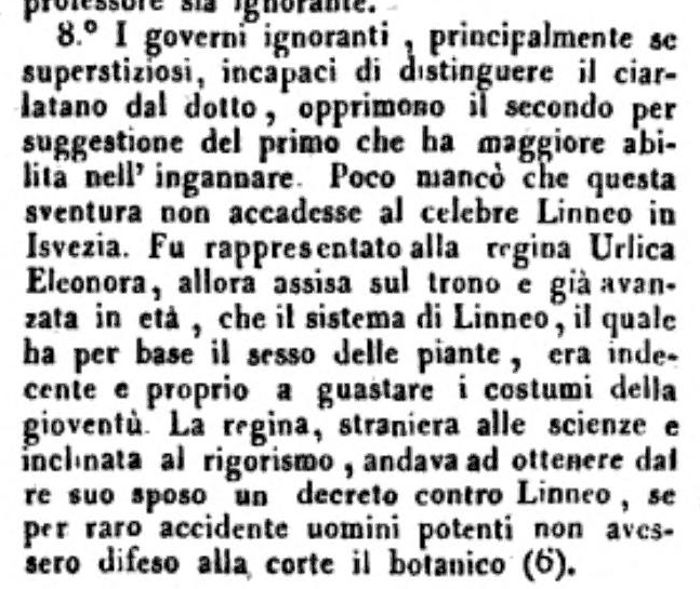

Linnaeus and the queen (tome II, p. 389)
Italian: Milan 1826, tome II, p. 389, scan n390. Highlighted: what Lecky retells.


8. Ignorant governments, especially superstitious ones, unable to tell the charlatan from the scholar, oppress the second at the prompting of the first, who is the cleverer at deceiving. This misfortune very nearly befell the celebrated Linnaeus in Sweden. It was represented to Queen Ulrika Eleonora, then on the throne and already advanced in years, that the system of Linnaeus, which is based on the sex of plants, was indecent and apt to corrupt the morals of the young. The queen, a stranger to the sciences and inclined to rigorism, was about to obtain from the king her husband a decree against Linnaeus, had not, by a rare chance, powerful men defended the botanist at court.
Original Italian
8.º I governi ignoranti, principalmente se superstiziosi, incapaci di distinguere il ciarlatano dal dotto, opprimono il secondo per suggestione del primo che ha maggiore abilità nell’ingannare. Poco mancò che questa sventura non accadesse al celebre Linneo in Isvezia. Fu rappresentato alla regina Urlica Eleonora, allora assisa sul trono e già avanzata in età, che il sistema di Linneo, il quale ha per base il sesso delle piante, era indecente e proprio a guastare i costumi della gioventù. La regina, straniera alle scienze e inclinata al rigorismo, andava ad ottenere dal re suo sposo un decreto contro Linneo, se per raro accidente uomini potenti non avessero difeso alla corte il botanico.
Lecky (vol. II, ch. IV, note 56): “Some good people in Sweden desired, it is said, to have his system of botany suppressed, because it was based upon the discovery of the sexes of the plants, and was therefore calculated to inflame the minds of youth. (Gioja, Philosofia della Statistica, tom. ii. p. 389.)” A fair summary, though Lecky leaves out the queen. Gioja’s own footnote gives his source: “Catteau, Voyage en Allemagne et en Suède, t. III, pag. 8” (not checked here), so Lecky’s “it is said” is a reasonable caution at two removes. “Philosofia” is Lecky’s spelling of the title, as printed.
Further down the rabbit hole
Sources that Lecky cites in the notes next to the ones that cite this page.
- Voltaire, Lettres philosophiques, XIVDescartes, who spent his wits on new proofs of God, accused of atheism
- Bayle, Dictionnaire historique et critiqueWhat Bayle really said about Augustine and Socinus
- Hallam, Literature of Europe and Constitutional HistoryHow Lecky quotes Hallam on persecution
- Palmer, A Treatise on the Church of Christ“Whosoever is separated from the Catholic Church … will not have life”
- Temple, Observations upon the United ProvincesWhy Holland was tolerant: an English ambassador’s answer
- Knox, The AppellationWhy the English should have put Queen Mary to death


Backlinks
Every place in Rationalism in Europe that links to this page (generated automatically when the site is built).
- Chapter IV, Part II: note 56